PuresmileDental clinic landing page
Good teeth, explained simply. - Dental clinic landing page UI/UX case study
A dental clinic website that calms nervous patients and makes booking a visit take one minute.
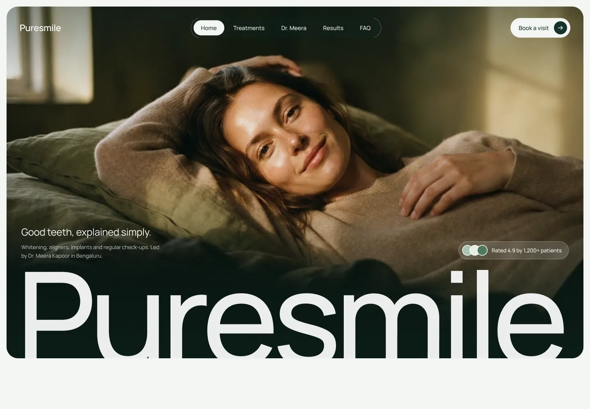
01Overview
A dental clinic website that calms nervous patients and makes booking a visit take one minute.
Puresmile is a dental studio in Bengaluru led by Dr. Meera Kapoor. I designed the landing page: a warm hero, the clinic's promise, how a visit works, the dentist's profile, treatments with starting prices, before-and-after results, an FAQ and a short booking form.
02The challenge
What had to be solved
Many people put off the dentist because they are nervous and unsure about cost. A clinic website has to reassure first and sell second.
Design goals
- Reassure nervous patients from the first screen
- Show prices upfront to remove fear of cost
- Introduce the dentist as a person
- Make booking quick and simple
03Process
How I approached it
- Warm heroA relaxed portrait and the line "Good teeth, explained simply".
- Honest promisesCheck first, a plan for your teeth, prices upfront, follow-up care.
- A real personDr. Meera's profile with a quote, specialities and track record.
- Short bookingName, phone, email, concern and preferred date, nothing else.
04First impression
Reassure first, then sell.
A relaxed portrait, the line "Good teeth, explained simply", a booking button and a 4.9 rating from 1,200+ patients.
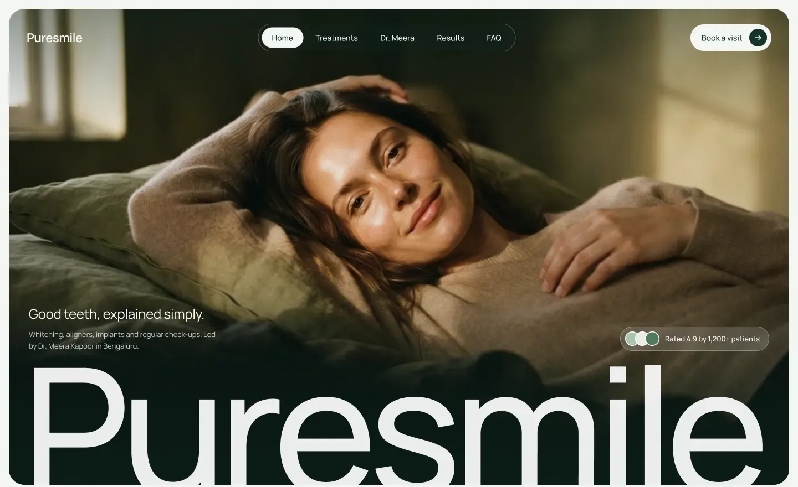
05Promise and expectations
Say what happens before it happens.
A short clinic statement followed by four promises: check first, a plan for your teeth, prices upfront and follow-up care.
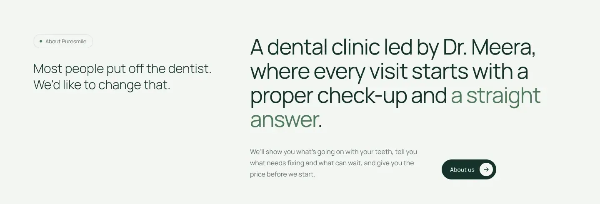
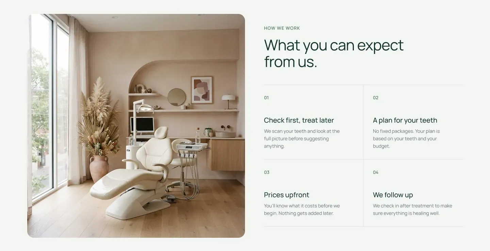
06The dentist
A real person, not a brand.
Dr. Meera Kapoor's profile pairs a warm portrait with a quote, specialities and her track record.
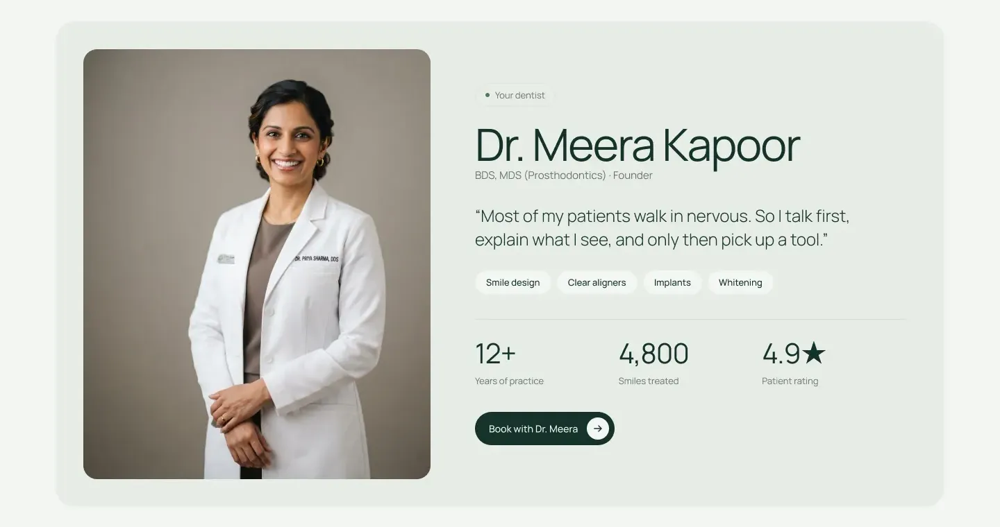
07Treatments and prices
Prices on the cards, not behind a call.
Whitening, aligners and implants each show sessions and a starting price. A dark band then explains a visit in three steps.
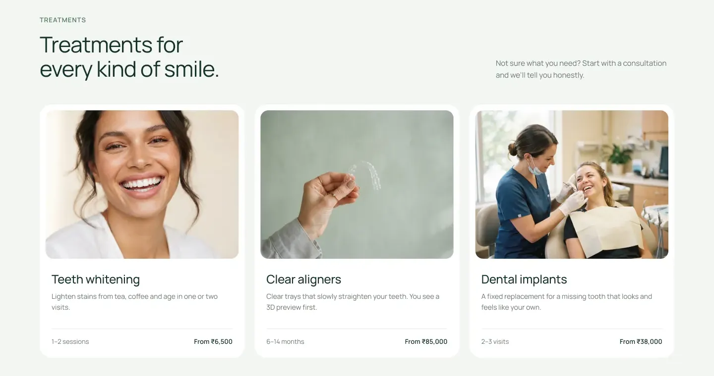
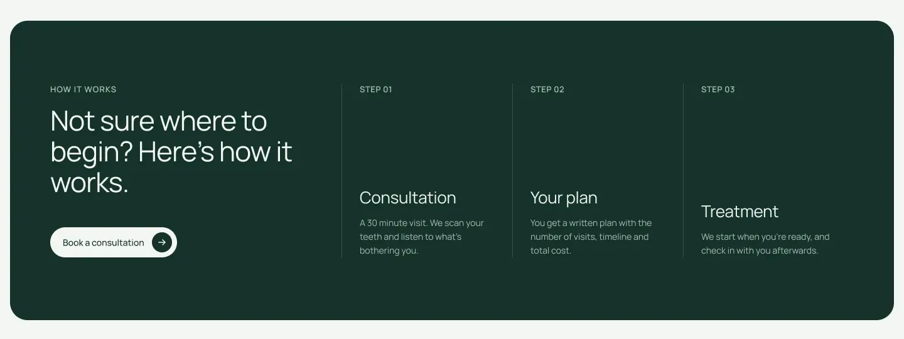
08Results and FAQ
Proof and answers to common worries.
Before-and-after results shared with permission, then an FAQ that answers sensitivity, cost and timing questions.
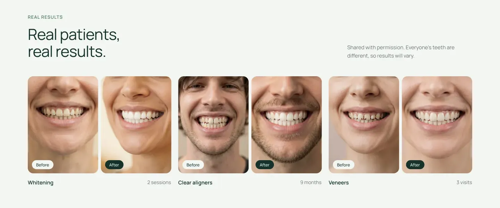
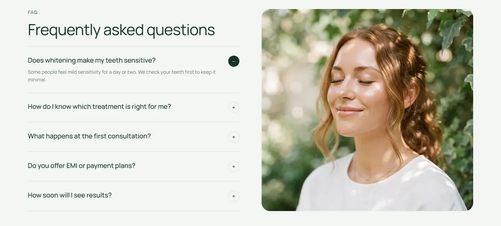
09Booking and footer
Book a visit in one minute.
A short form (name, phone, email, concern, date) next to a smiling portrait, and a footer with the address and opening hours.
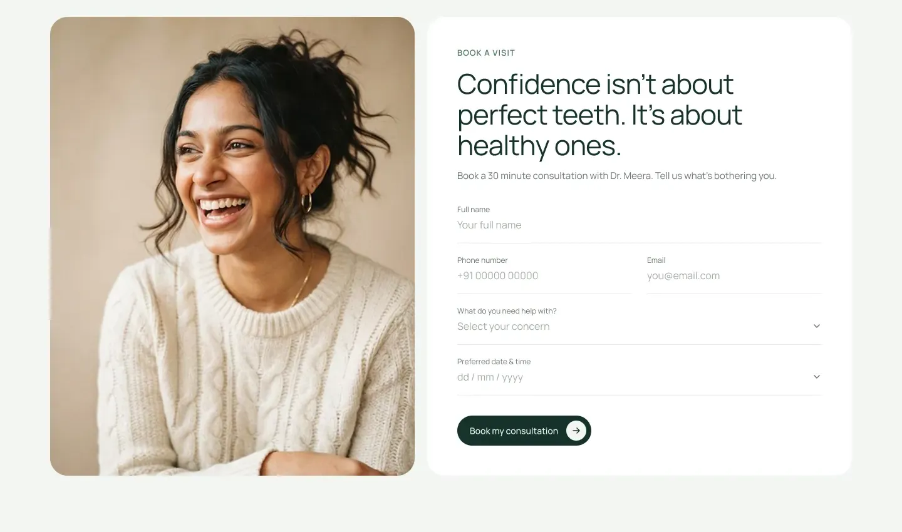
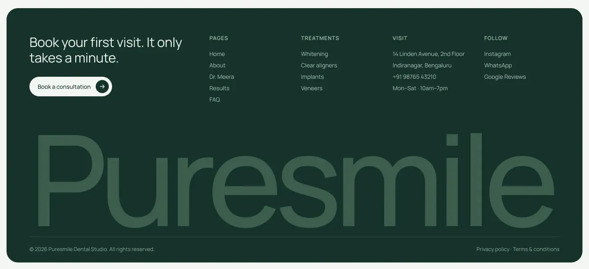
10Decisions
Key design decisions
Showing "From ₹6,500" removes the biggest reason people delay booking.
A calm green and warm photography feel like a wellness studio, not a hospital.
Before-and-after photos carry a note that results vary, which builds trust.
11Design system
Visual language
Deep evergreen with soft sage and warm neutrals, a large light serif for headlines and rounded pill buttons.
TypeLight, large headlines
12Outcome
What was delivered
Puresmile gets a calm, trustworthy landing page that answers a nervous patient's questions in order and ends with a one-minute booking form.
If the project continues, next I would:
- Add online slot booking
- Translate into Kannada and Hindi
- Add patient reviews from Google
Next project
CareerPilot AIA career coach in your pocket.View project